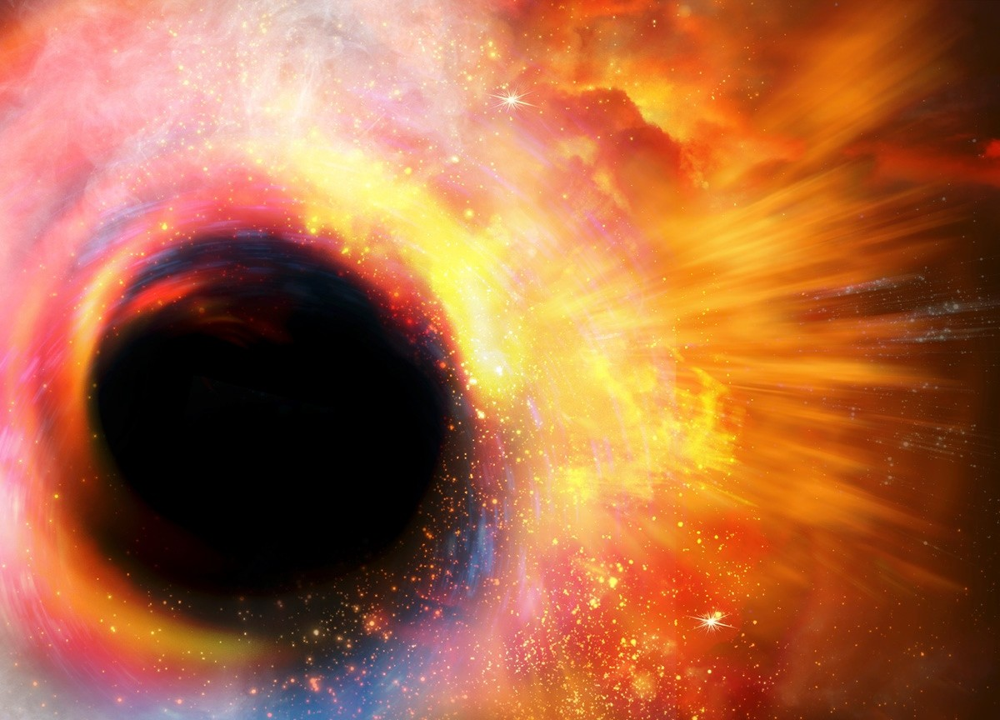

Big Bang Theory
This is the most recent theory explaining the origin and evolution of the universe. The Big Bang theory suggests that the history of the universe began with the Big Bang around 13.8 billion years ago. As a result of the Big Bang, time, space, and all matter were created, leading to the expansion of the cosmos.

Black Hole Theory
Black holes form from the collapse of very massive stars. These are regions where gravity is so intense that nothing, not even light, can escape. Black holes interact with nearby matter and can emit radiation.
String Theory
String theory is one approach that seeks a unified description of the physical world. According to this theory, we live in a three-dimensional space on Earth, but the cosmos might contain additional microscopic, non-material "strings" (vibrating filaments) that are part of confined spaces with different sizes and characteristics.
Here are three key points about String Theory:
- Unified Description of the Universe: String theory seeks to provide a single framework that explains all fundamental forces and particles in the universe, including gravity, electromagnetism, and quantum mechanics.
- Extra Dimensions: While we experience a three-dimensional space, string theory proposes the existence of additional microscopic dimensions that are compactified, potentially influencing the laws of physics.
- Vibrating Strings: According to string theory, the fundamental building blocks of matter are not point-like particles but rather one-dimensional "strings" that vibrate at different frequencies, with each vibration corresponding to a different particle type.